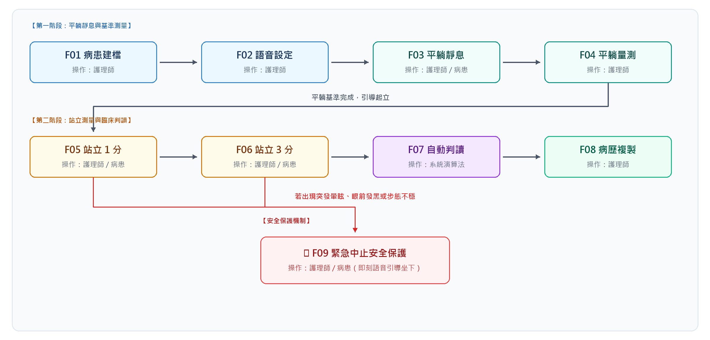
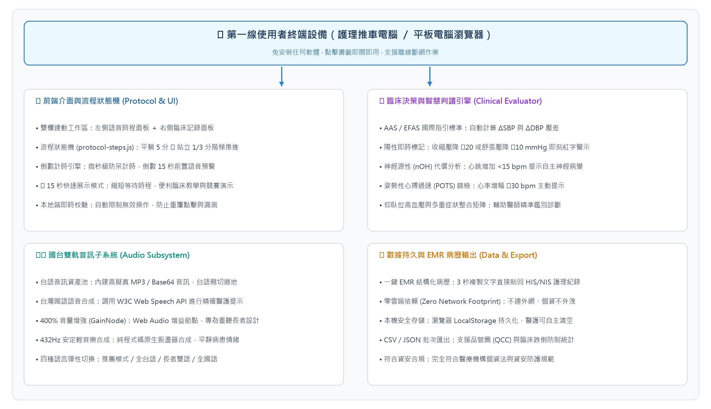

本系統為自行研發的姿勢性低血壓 (Orthostatic Hypotension, OH) 臨床量測導引與紀錄系統，整合病患雙語動作衛教、國際指引標準計時、自動差值運算、神經源性代償分析與 EMR 結構化病歷生成，解決傳統人工量測時程縮水、長輩語言焦慮、人工心算錯誤及病歷登打耗時的問題。系統已於 2026 年 10 月完成開發並投入臨床測試。
| 角色 | 使用情境 | 主要任務 |
|---|---|---|
| 臨床護理師 / 技術員 | 門診量測、病房防跌篩檢、復健下床評估 | 建立病患資料、啟動階梯計時、依語音提示測量血壓、勾選自覺症狀、一鍵複製病歷至 HIS/NIS。 |
| 受檢病患 (長者) | 檢查床平躺、床邊站立 | 聽取台語/國語語音指示、配合平躺休息、放鬆改變姿勢、即時回報頭暈或不適感。 |
| 臨床醫師 | 門診看診、病房巡房、自律神經評估 | 查閱壓差判定結果、神經源性 (nOH) 代償指標、POTS 篩檢提醒，作為診斷、調藥與處置依據。 |
| 系統 / 品管管理者 | 系統維護、護理品管圈、跌倒專案統計 | 維護系統參數、檢視本機歷史紀錄、匯出 CSV 進行全院或科部姿勢性低血壓與跌倒關聯性分析。 |
以瀏覽器提供病患資料建立、國台雙軌語音切換、階梯倒數計時（平躺 5 分鐘、站立 1 分鐘、站立 3 分鐘）、原生背景舒緩音樂合成、15 秒快速展示模式、各階段血壓心跳差值即時計算、自律神經代償反應判定、緊急中止安全防護、一鍵複製結構化 EMR 病歷摘要、歷史紀錄查閱與 CSV 資料匯出。醫護人員從量測前準備到測後病歷歸檔皆可在同一單頁完成；長者受檢者聽取語音指引即可無障礙配合操作。
早期臨床測試曾遇長者聽力退化使普通喇叭音量不足、以及人工心算神經源性心率代償指標容易疏漏。後以 Web Audio API 加入 GainNode 提供最高 400% 音量增強，並由系統演算法自動比對 ΔSBP、ΔDBP 與 ΔHR。架構改善後的試用成果如下。
| 指標 | 結果 | 使用情境 | 資訊來源 |
|---|---|---|---|
| 指引時程遵從率 | 100% | 門診與病房量測個案 | 系統計時日誌（平躺滿 5 分、站立滿 3 分） |
| 差值計算正確率 | 100% | 完整輸入之量測紀錄 | 臨床評估模組自動校驗 |
| 病歷摘要產出時間 | 1 至 3 秒 | 量測完成一鍵複製 | 護理人員操作回饋 |
| 長者語音理解配合度 | > 95% | 慣用台語之高齡受檢者 | 臨床試測觀察與病患回饋 |
| 高跌倒風險即時中止率 | 100% | 突發頭暈或眼前發黑個案 | 安全防護機制測試紀錄 |

| 編號 | 動作 | 操作角色 | 操作內容 |
|---|---|---|---|
| F01 | 病患建檔 | 護理師 | 輸入病歷號、姓名、年齡、性別，選取量測手別（左手/右手）與壓脈帶規格（標準成人/加大/小兒），亦可於備註欄記載特殊病史。 |
| F02 | 語音設定 | 護理師 | 切換語言模式（預設：病患台語／醫護國語，亦支援全台語、病患雙語、全國語）；調整台語音量（最高支援 400% 增益放大）；點擊測試發音。可依需求勾選「坐姿過渡」或「15秒快速展示模式」。 |
| F03 | 平躺靜息 | 護理師 / 病患 | 點擊開始平躺計時（預設 300 秒），系統發布語音請長者閉目放鬆，背景播放 432Hz 舒緩輕音樂；倒數最後 15 秒發出國語預警提示護理師準備血壓計。 |
| F04 | 平躺量測 | 護理師 | 計時結束後啟動血壓計，於系統面板輸入平躺收縮壓、舒張壓、心跳與自覺症狀，確立基準血流動力學數值。 |
| F05 | 站立 1 分 | 護理師 / 病患 | 點擊引導站立，系統以台語指導長者緩慢起身；自動啟動 60 秒計時；倒數結束測量並鍵入站立 1 分鐘數值，系統即刻計算與平躺基準之差值並標註警示。 |
| F06 | 站立 3 分 | 護理師 / 病患 | 繼續維持站立並計時 120 秒（累計滿 3 分鐘）；倒數結束輸入站立 3 分鐘數值，勾選長者出現之自覺症狀（頭暈、視力模糊、全身無力、冒冷汗等）。 |
| F07 | 自動判讀 | 系統 | 演算法自動判讀：① 是否符合姿勢性低血壓診斷標準 (ΔSBP ≤ -20 或 ΔDBP ≤ -10 mmHg)；② 分析心率代償反應 (ΔHR < 15 bpm 提示神經源性 nOH 疑慮)；③ 檢驗 POTS (心率增加 ≥ 30 bpm) 與仰臥高血壓。 |
| F08 | 病歷複製 | 護理師 | 點擊「複製臨床病歷摘要」，系統將受檢資訊、各階段數值、差值計算與臨床建議整合為結構化文字並寫入剪貼簿，護理師可於 3 秒內直接貼入院內 HIS/NIS 系統；系統同時將該次紀錄存入本機歷史資料庫，支援日後檢視與 CSV 匯出。 |
| F09 | 緊急中止 | 護理師 / 病患 | 若受檢者於站立過程突發劇烈暈眩、眼前發黑或步態不穩，護理師一鍵按下「🚨 緊急中止」，系統立即切換語音請病患坐下休息，並將中止原因自動註記於病歷摘要中，標示為高跌倒風險個案。 |
系統在填寫、計時、運算、複製階段檢查資料，限制無效操作，並在數值異常或病患突發不適時顯示明確的處理提示。
| 動作 | 處理對象 | 處理方式 |
|---|---|---|
| 病患建檔 | 病歷號或姓名等欄位留空 | 採結構化容錯設計，病歷摘要與輸出自動以「未填」標註，維持病歷排版完整性，避免阻斷緊急臨床量測流程。 |
| 數值輸入 | 輸入負數或非數值字元 | 輸入欄位設有 min/max 區間限制，且臨床評估模組之 parseNum() 函式主動過濾負數與非數值，無效數值不納入差值運算與判定。 |
| 流程操作 | 平躺基準值尚未輸入 | 系統允許醫護彈性引導流程，但在臨床決策區標記為「數值待補」，並明確提示請先完成平躺基準值，防止產生無效壓差。 |
| 計時流程 | 重複觸發開始計時 | 系統於每次啟動計時前先主動清除前次計時器 (clearInterval)，確保背景維持單一計時執行緒，防止秒數錯亂。 |
| 計時流程 | 臨床突發打斷或需彈性調配 | 提供「暫停/繼續」控制鍵，暫停時計時與輕音樂同步靜音；醫護人員亦可依病患當前臨床耐受度直接點選「下一步驟」彈性推進。 |
| 站立測試 | 病患突發暈眩、眼前發黑或不穩 | 一鍵點選「🚨 緊急中止」，即刻停止計時與音樂，播放專屬安撫語音引導病患坐下，自動將頭暈症狀與中止警示寫入病歷摘要。 |
| 病歷複製 | 瀏覽器阻擋 Clipboard API | 採用雙軌複製機制：優先使用 navigator.clipboard API，失敗時自動切換至背景隱藏式 textarea 執行 execCommand('copy') 備援複製。 |
| 歷史存儲 | 本機 LocalStorage 資料異常 | 資料讀取與解析全程以 try/catch 包覆並驗證陣列結構，若遭遇資料格式損毀自動降級回傳空陣列，防止系統白屏崩潰。 |
| 音訊播放 | 瀏覽器音訊自動播放原則限制 | 嚴格遵從 W3C 規範，將 AudioContext 初始化與 resume() 綁定於使用者點擊互動行為，避免瀏覽器攔截無聲播放。 |
| 語音引擎 | 作業系統缺少台語 TTS 引擎 | 系統內建預錄與高擬真台語 MP3 / Base64 音訊資料庫，完全不依賴作業系統語音包，確保各廠牌電腦推車與平板皆能正常發聲。 |

使用者透過瀏覽器操作單頁應用 (SPA)。系統所有運算、語音合成與病歷格式化皆在瀏覽器本地記憶體內完成，不連外部伺服器。
系統採完全本機端架構 (Client-Side Only)，不設外部後台伺服器。所有量測數值、病患姓名與病歷號僅儲存於當前瀏覽器本地記憶體與 LocalStorage 中。無任何外網資料傳輸，不傳輸至第三方公有雲或 AI API，完全符合台灣個人資料保護法與醫療機構資訊安全規範。
考量第一線護理推車多為共用設備，逐次帳號登入會大幅增加臨床量測前置時間，本系統採免登入即開即用設計。醫護人員開啟瀏覽器書籤即可直接操作；測量完畢一鍵將紀錄複製回原本已完成登入之院內 HIS/NIS 系統，兼顧使用流暢性與存取安全。
系統具備 100% 完全離線運作能力。前端資源均已打包為靜態檔案，即便病房無線網路暫時中斷或訊號不佳，階梯計時、舒緩音訊播放、台語提示、壓差計算與病歷複製皆不受任何影響，確保醫療常規不因斷網而停擺。
• 雙軌分流機制：病患端呼叫內建台語 MP3 / Base64 音訊資料庫，確保台語發音道地流暢；醫護端呼叫 W3C Web Speech API 進行精準國語流程提示。
• 400% 音量增強 (GainNode)：專為重聽長者設計，透過 Web Audio API 建立音訊增益節點，最高可提供 4 倍無失真放大，解決推車喇叭功率不足之問題。
• 純程式碼舒緩音樂合成：利用 Web Audio API 振盪器即時生成 432Hz 安定泛音，無須下載外部大型音檔，零版權負擔且秒開即播。
| 資料 | 主要內容 | 用途 |
|---|---|---|
| 受檢者資訊 (Patient) | 病歷號、姓名、年齡、性別、量測手別、壓脈帶規格、臨床備註 | 標記受檢個體識別，提供標準化病歷產出與核對依據。 |
| 多階段生理數值 (Measurements) | 平躺、坐姿、站立 1 分鐘、站立 3 分鐘之收縮壓 (SBP)、舒張壓 (DBP)、心跳 (HR) 及自覺症狀陣列 | 供臨床決策引擎計算各階段相對於基準值之變化量。 |
| 臨床判定結果 (Evaluation) | ΔSBP、ΔDBP、ΔHR、是否達 OH 標準、神經源性代償提示、POTS 警示、中止狀態 | 生成即時視覺標記與病歷建議，輔助醫師診斷。 |
| 歷史紀錄庫 (History Records) | 紀錄 ID、量測時間戳、受檢者資料、各階段數值、判定結果、中止原因 | 本機持久化存儲，提供清單檢視、個別紀錄調閱與 CSV 匯出。 |
系統已於模擬臨床環境與實際個案中完成驗證，下表列出各項功能的驗證結果。
| 項目 | 結果 | 判定內容 |
|---|---|---|
| 病患資料建立 | 通過 | 欄位防呆檢驗正確，可完整記錄病歷號、姓名、手別與壓脈帶尺寸。 |
| 雙語語音切換 | 通過 | 4 種語言模式（台語/國語分流、全台語、雙語、全國語）皆可正常播放。 |
| 音量增益放大 | 通過 | Web Audio API GainNode 可在 20%~400% 範圍內平滑調節，音量顯著放大。 |
| 階梯倒數計時 | 通過 | 平躺 300 秒、站立 60 秒、站立 120 秒計時準確，結束前 15 秒發出預警。 |
| 15 秒快速展示模式 | 通過 | 勾選後各階段自動縮減至 15 秒，倒數與預警正常觸發，便於演示與培訓。 |
| 即時壓差運算 | 通過 | 收縮壓下降 ≥ 20 或舒張壓下降 ≥ 10 mmHg 即刻以紅字高亮標記。 |
| 神經源性代償分析 | 通過 | 心跳增幅 < 15 bpm 時，正確顯示「疑似神經源性 (nOH)」之輔助判讀。 |
| POTS 篩檢提醒 | 通過 | 站立血壓未降但心跳增加 ≥ 30 bpm 時，正確觸發心搏過速警示。 |
| 緊急中止機制 | 通過 | 點擊中止按鈕立即切換語音請病患坐下，流程中斷並於病歷標記中止原因。 |
| 一鍵 EMR 病歷複製 | 通過 | 點擊按鈕可正確複製結構化文字至剪貼簿，成功貼入文字編輯器與 HIS 欄位。 |
| 本機資料儲存 | 通過 | 測量完成自動存入 LocalStorage，重新整理頁面後歷史紀錄清單完整保留。 |
| CSV 檔案匯出 | 通過 | 歷史紀錄可正確匯出結構化 CSV，欄位包含病歷號、各期血壓與判定結論。 |
| 完全離線執行 | 通過 | 中斷電腦網路連線後，計時、語音播報、算差與病歷複製功能均 100% 正常。 |
藍牙量測串接：評估介接院內醫用藍牙 (BLE) 血壓計，量測完畢數值自動帶入系統，省去人工手動鍵入。
帳號與權限管理：若需追蹤個別量測護理人員工號，可建立員工工號輸入或單一簽入 (SSO) 機制。
FHIR / HIS 深度介接：配合院內資訊室標準，將病歷輸出擴充為標準 HL7 FHIR 格式，自動回傳醫療資料庫。
跌倒前哨主動防護網：結合病房穿戴式生理手環或床邊離床感測器，於長者離床血壓驟降第一時間對護理站發出主動告警。